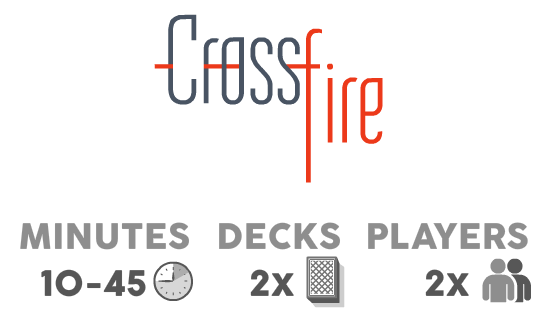
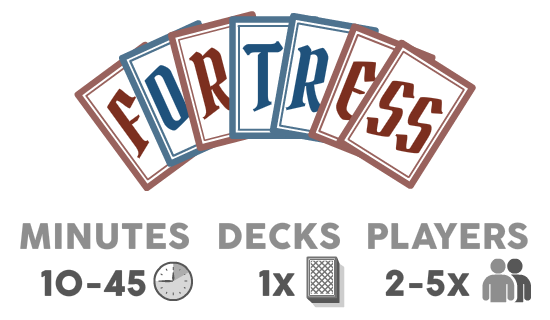
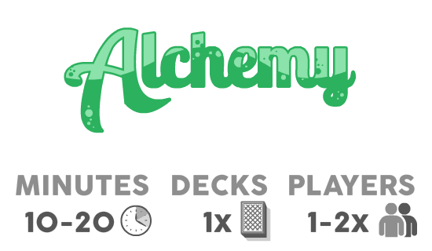
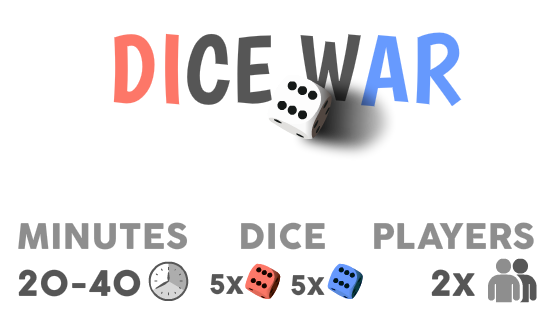
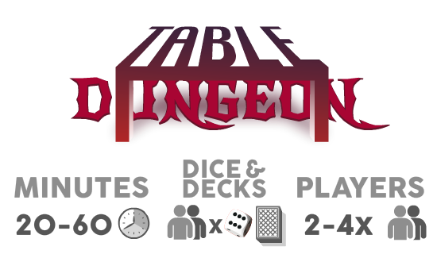

Below is a description of the 3 card games: Crossfire, Fortress, and Alchemy. Below that is the bonus dice game, Dice War, for all you roleplaying gamers out there with hecka dice. Below THAT is the bonus stretch goal game, Table Dungeon
Crossfire is a territory control game that only requires two decks of standard poker cards and a table. The game involves two players starting at either end of the table making his way towards (and through) his opponent. There is a high level of strategy and tactics to obtain victory. A game session may take anywhere from 10 minutes to 45 minutes, depending on the aggressiveness of the players. It's like Starcraft, but without so many aliens.
Fortress is a game in rounds for 2 to 5 players. The concept is to protect royal cards in your hand while trying to capture your opponent’s royals. The game can be played without a table, and only requires a single standard poker deck of cards (removing the Jokers). A game typically lasts 10 to 45 minutes, depending on the scoring used. Remember building forts as a kid? It's not quite that level of awesome, but it does require significantly less pillows.
Alchemy is a math and pattern recognition game that can be played alone or with a friend. Alone the game is quite casual and a good time killer. With a friend, the game is fast paced and chaotic. The single player game lasts about 10 to 15 minutes, while a two player game lasts about 20 minutes. The game only requires a single deck of cards. If you're not good at simple addition, just play with someone who is much worse at arithmetic: like your pet baboon.
Dice War is a small board game about moving dice into your opponent's zone and removing your opponent's dice before they get to your zone. The game is a bit of strategy and a bit of dice rolling luck. A game lasts about 30 minutes between two players. The game requires 10 6-sided dice, 5 of each color. It also uses a 20-sided dice for score keeping, but it isn't required. I bet you never thought you'd use those dice for anything besides D&D.
Table Dungeon is essentially a D&D derived card game with the all familiar classes, items, creatures, leveling, and brutal ends. Players must work together to defeat the endless crawl of baddies; however, there is only one victor in the end, and so players must choose carefully when to be greedy and when to take one for the team.
The game can be played with 2-4 players, and requires a die and standard deck of cards per player. (e.g. if 4 players, it requires 4 dice and 4 decks). It is recommended to have decks with different backs to keep things organized, as some deck mingling is done. Setup takes about 5 minutes, and playtime varies on how long the players can survive.
Feel free to roleplay your character during the game, but you are required to have an amazing accent.